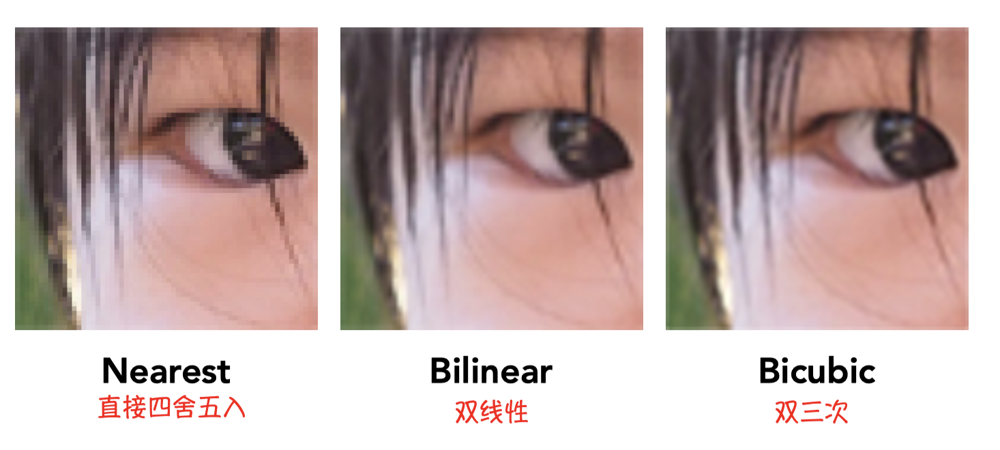

Games101笔记|Shading
当这些物体都变成三角形之后，变成屏幕上的一个个像素点之后，这些像素的值和颜色应该是什么呢？这个就是着色的功能。下一步操作为着色。
挪动一下光源后，物体并没有发生变化，但是物体的颜色却发生了变化。这个问题应该如何解决，就是着色的作用。
这门课中着色的定义：对不同的物体应用不同的材质这样一个过程。
因为不同的材质肯定和光线的相互作用有不同的方法，可通过这种不同的表现形式来展示材质的特性。
1 照明和阴影
最基础的模型：Blinn-Phong反射模型
Blinn-Phong 模型是一个经验模型，并不是一个完全符合物理规律的模型。
(下图的所有向量都是指的单位向量。)
- 镜面高光 Specular：一束光打到比较光滑的表面上，这束光就会在这镜面反射的附近被反射出去。
- 漫反射光 Diffuse：一束光打到比较粗糙的平面上，光会向四面八方反射出去。
- 环境光 Ambient：并不是一种直接光照，是间接光照。通过四面八方的物体反射得到的光。
我们此处考虑的这个 shading point，就只考虑这个点和其他的几个不同的方向，不考虑这个点是否在阴影内。考虑这个点的着色情况就只看它自己，不考虑其他物体的存在。
着色有局部性。着色可以看到物体的明暗变化，但是看不到阴影。==阴影如何生成稍后再讲~==
漫反射
-
知道了有多少能量会被传播到当前的 shading point
光线在传播的过程中，在单位面积的情况下，在任何一个位置上所能接收到的能量和光线传播的距离是成平方反比的。（也就是，光线传播的距离越长，单位面积上所接收到的能量是逐步衰减的。）
-
也知道了有多少能量在这个 shading point 上会被吸收
Lambert 余弦定律
“接收到的能量”和“光照方向与法线方向之间夹角的余弦”是成正比的。
将以上两者结合到一起，就可以知道 diffuse 的表示方法了。
shading point 到点光源的距离为 r；点光源到单位距离上的能量强度是 I，那么我们就能够知道这个点光源通过 r 这个距离传播到shading point的能量有多少。能量到达了物体之后会被物体表面吸收，而吸收多少取决于Lambert 余弦定理。最终计算的结果$L_d$就表示我们可以看到有多少能量，对应的就是物体的明暗。
有一个地方需要注意的是，$ max(0, n · I) $ 这里为什么要做一个点乘？表示的是当点乘结果是负值的时候，表示光从下面打过来才可能出现，此时并没有什么物理意义，就把值取为 0。
shading point 为什么会有颜色？因为它自己本身会吸收一部分能量，反射出去的是它不吸收的能量。由于不同的点对能量有不同的吸收率，定义一个系数$K_d$ 来表示这个点本身吸收多少。（当$K_d = 1$ 意味着不吸收任何能量，$K_d = 0$ 意味着吸收了所有的能量，我们看到的是个黑的。）不同的漫反射系数$K_d$ 决定了它的亮度和颜色。
漫反射光打到shading point 上去，会被均匀地反射到各个方向上去，就意味着我们不管从哪个方向上观察这个点，所看到的结果应该是一样的。(因为能量是被均匀反射出去的。) 最终看到的结果和 v (观察方向)完全没有关系。
高光
什么情况下看得到高光？比较光滑的物体的反射都具有一定的特性，反射方向非常接近镜面反射的方向。当观察的方向和镜面反射方向接近的时候，就能看到高光了，其他时候看不到高光。
v 和 R 接近，就说明了 h 和 n 接近。它们两个有一定关系。可通过衡量 n 和 h 是否接近来判断我们是否可以看到高光。如何衡量两个向量是否接近呢？点乘。两个向量很接近的话，那么点乘结果接近 1，离得很远的话，点乘结果接近 0。
多少能量到达了shading point 还是和上面一样考虑。但是没有考虑有多少能量被吸收了，因为它毕竟还是一个经验模型，它在这里没有考虑这部分。
为什么要用半程向量和法线来近似 R 和 v 是否接近呢（这个是 blinn-Phong 模型）？为什么不直接计算 r 和 v 的夹角是否接近（这个就是 phong 模型。 ）？这是一个改进，因为反射向量 R 不好计算。近似可以简化很多的计算量。
环境光
环境光来自四面八方，强度都是相同的。这里的环境光其实是一个常数。它的作用就是保证物体并非完全是黑的。（环境光是间接光照，计算起来十分复杂，这里用一个合理的常数来近似代替实际的环境光。）
最终的Blinn-Phong 模型
下一步就是对所有的像素点做一个着色操作。
着色频率
着色频率指着色要应用在哪些点上。
三种着色模型：
-
Flat shading
- 每一个三角形是一个平面，对每个三角形的面求出一条法线。（对三角形的两个边做个叉乘即可求得）
- 不适用于光滑表面。
-
Gouraud shading
- 对每个三角形的每个顶点求各自法线，求得之后做一次着色，那么每个顶点就有颜色了，三角形内部的颜色就可通过插值计算出来。
- 如何对顶点求法线？答案在这里~
-
Phong shading
- 对每个三角形的每个顶点求各自法线后，可以对三角形内部的每个像素都插值出一个独特的法线方向。对每个像素进行一次着色，就可以得到一个相对比较好的结果。
- 区分一个概念，之前的是Phong着色模型，这个是指的着色频率，是不一样的。
由下图可以看出，当模型足够复杂时，其实可使用相对简单的着色模型，因为效果差不多。这时用更小的开销，得到近乎一样的效果。因此着色频率取决于面、点出现的频率，当面出现的频率已经很高的时候，就可以用相对简单的着色模型。
如何知道逐顶点的法线是什么？
理想情况：知道它近似的是什么形状，因此直接求得法线。比如近似的是球，那么直接连接这个点和球心就好了，延长线就是该点的法线。
很多三角形往往会共用一个顶点，那么这个顶点的法线可以认为是这相邻所有面的法线的平均。做加权的平均，相邻三角形面积越大认为它对顶点法线的贡献的越大。
又如何真正地去定义一个逐像素的法线呢？
已知两顶点的法线，如何插值出中间的法线呢？==这个就需要用到重心坐标。(稍后会讲到。)==
2 实时渲染管线
管线概述
先把三维空间中的点投影到二维空间中去，然后再指定每哪三个点可以组成一个三角形。三角形会覆盖屏幕上的哪几个像素点（光栅化 ），对这些像素点进行着色。
着色器
着色器shader 是用来定义任意的顶点，怎样操作任意的像素或者片段。
网站推荐，只用关注场景如何渲染
Inigo Quilez http://shadertoy.com/view/ld3Gz2
GPU
用于执行图形管线计算的专用处理器。
GPU 本身是一个高度并行化的处理器。
3 纹理映射
我们希望在物体不同的位置定义不同的属性，因此引入了纹理映射。
如何定义任何一个点的不同属性呢？
首先意识到：任何一个三维物体，其实它的表面都是二维的。而纹理就是一张图。
纹理映射就是将这张图按照，物体上的一个点和纹理上的一个点的一一对应关系，给它包围在物体上。三角形每个顶点都对应一个纹理坐标。
任意一个三角形都能找到在纹理上它应该在哪个点上。
如何找到对应的解决方法：（了解一下即可）
- 美工完成的。
- 自动化过程，给你任何一个模型，可以将它展开成一个平面，并且尽量避免三角形的扭曲。将它和纹理一一对应。（这是一个几何上的重要研究方向~）
针对纹理定义了一个坐标系，可以指出纹理上任意一个点的坐标(u, v)。 注意：u 和 v 都在[0, 1]这个范围内。
纹理可被重复使用多次。
3.1 如何在三角形内部进行属性的插值？
3.1.1 重心坐标
为什么要在三角形内部做插值？
- 当我知道三角形三个顶点的属性的时候，我们希望通过此知道三角形内部的一些值。并且插值可以做到平滑的过渡。
插值什么内容？
- 可以在三角形顶点上定义各种不同的属性，可以通过插值此知道三角形内部点的属性。这些属性可以是位置，纹理坐标，颜色，法线，深度，材质等。
如何做插值？
- 通过重心坐标。
什么是重心坐标？
重心坐标是定义在一个三角形上的。在三角形 ABC 所形成的平面内的任意一点(x, y) 可以表示成三个顶点坐标的线性组合。注意！需要满足一个条件：线性组合的三个系数加起来等于 1。这三个系数的组合就是点(x, y)在该三角形的重心坐标下的表示。
由于“系数加起来等于 1”这个条件的限制，因此重心坐标虽说是三个数，但只要知道两个数的话，就可以 1-这两个数的和，求得第三个数了。这样其实也是有道理的，毕竟我这是个二维平面，本来只用两个数就可以表示坐标了，不用非得三个数。
如果这个点在三角形内，还需要满足另一个条件：这三个系数都是非负的。当这个条件满足的时候，我们就知道这个点一定在三角形内。如果不满足这个条件，但满足三个系数和为 1 的话，那么表示这个点在三角形所在平面，但有可能在三角形外。
从定义，我们也可以知道△ABC 所在三个顶点的重心坐标：A(1, 0, 0)、B(0, 1, 0)、C(0, 0, 1)。
如何求得三个系数，也就是如何求得重心坐标呢？
方法一：面积比
**三角形内的点将三角形划分成了三个区域，利用这三个区域的面积比求得对应的三个系数。**顶点 A 对面的三角形区域被称为$A_A$，顶点 B 对面的三角形区域被称为$A_B$，顶点 C 对面的三角形区域被称为$A_C$。如下图左。
三角形的重心有个特殊的性质，可以将三角形 ABC 分成面积相等的三部分。因此三角形重心的重心坐标是($\frac{1}{3}$, $\frac{1}{3}$, $\frac{1}{3}$)。
方法二：公式法
已知三角形的三个顶点坐标，就可以用公式求得这三个系数是多少。如下图右。
我们只要知道：对于三角形内任意一个点，都可以计算它的重心坐标就可以啦。
3.1.2 求得重心坐标后，如何用它进行插值呢？
求得了重心坐标后，就可以用重心坐标去计算三角形内部任意一个点的额插值。我要插值的属性同样也能用重心坐标去把它用线性组合表示出来。 意思是：假如三角形顶点有多个属性，那么我就可以通过三角形内部的一个点，它的重心坐标 (α, β, γ)，将它的属性通过这个坐标给线性组合起来，得到该点的属性值。
**总结：先算出重心坐标，然后用重心坐标和三角形顶点的属性信息做一次线性组合，得到我们想要的三角形内部点的属性信息。
但是请注意❗️在投影下，这个三角形的形状可能会发生变化，因此也是不能保证重心坐标不变的。总结：经过投影后，三角形的重心坐标有可能会发生改变。
因此，如果我们要插值三维空间中的属性，就应该取三维空间中的ABC坐标来算它的重心坐标是多少 ，再去做插值。不能在投影之后的坐标里面做插值。
特别说一下深度。光栅化的时候，三角形都被投影到屏幕上去了，三角形会覆盖很多的像素，像素都有中心。对这些中心点可以知道它在投影了的三角形的哪里，然后求出重心坐标，对投影了的三角形顶点的深度做插值。这个操作方式得出的结果是不对的。
正确操作姿势：找到像素中心点对应在三角形的位置它在三维空间中的坐标。然后在三维空间中对三角形顶点的深度做插值。（应用逆变换将已经投影到二维平面上的三角形再投影回去。）
在三维空间中的属性就在三维空间中做插值，然后再把它对应到二维空间中去。
根本原因就是：重心坐标在投影操作下可能会发生变化。
3.2 如何将纹理应用在实际的渲染中？
每个三角形顶点都会对应一个纹理坐标(u, v)，那么三角形内部的采样点就可以通过重心坐标插值来求得采样点自己对应的纹理坐标属性。然后再根据这个纹理坐标查看纹理图上该坐标对应的颜色，最后将这个颜色给涂在相应的采样点上。
3.2.1 纹理的放大（纹理太小了怎么办？）
看着很高清的一个墙，上面贴的图却很低清，这种情况怎么办呢？
纹理过小导致的问题描述
对于任何一个采样点，都可以找到它对应的纹理位置。但是这个位置可能不是整数，不是整数怎么办呢？就把它四舍五入为整数。那么在一定的范围内，我们要查找的是相同的纹理上的像素。
纹理上的像素，叫做纹理元素，或者纹素texel。
**会出现一种现象：一个像素的周围很多像素都会被映射到同一个纹素上。这就是因为纹理太小了。**这样的图片会看起来有一个个格子，效果并不是很平滑自然。
这就引出需要解决的一个问题：那当我们查到的纹理坐标是非整数的时候，应该如何处理呢？往下看解决方法：
双线性插值
首先利用水平的两个顶点的颜色，进行水平插值得到$u_1$和$u_2$的颜色值；然后利用$u_1$和$u_2$的颜色值进行竖直方向上的插值得到我们想要的红色点的颜色。
最终红色点所对应的颜色就综合考虑了周围四个点的颜色，可以在四个点所围成的区域内，取得一个平滑的颜色。
找最近的四个点做双线性插值就可以得到平滑过渡的结果。
双向三次的插值
不是取周围的 4 个纹素，而是取的 16 个。然后也是先做多次水平上的插值和垂直方向上的线性插值。
这种做法的运算量比双线性插值的要大很多，但是效果也会好很多。

3.2.2 如果纹理太大了怎么办？
纹理太大导致的问题描述
近处出现锯齿现象，远处出现摩尔纹。
近处一个像素覆盖的纹理区域其实相对较小；在远处，一个像素其实覆盖的是一片纹理，是比较大的区域。这告诉我们：屏幕上的像素覆盖的纹理上的区域大小是各不相同的。
如果说对于一个像素，它覆盖的纹理区域挺小，用这个像素的中心计算到的纹理坐标查询一下它的值。得到这个像素区域所覆盖纹理的值，可以近似的这样认为没问题。
但是当一个像素覆盖的是一片很大的纹理区域，它使用点采样所对应到的颜色值就可以代表这个纹理区域的平均颜色值吗？当然不可以，一个像素点是不能对应这么大一块纹理的，纹理中都有不同的颜色变化啊。因此当一个像素点对应的是比较大的一块纹理区域的时候就不能使用点采样。
本质原因：当这个纹理特别大的时候，一个像素里面有可能包含特别大一块纹理。这块纹理一直是在变化的，也就是说这个像素内部频率变化很高，可是你只用了一个采样点（像素）去采样它，这样效果肯定不对。应该需要一个更高频的采样方法。
解决方法一：超采样
将每个像素分成 512 个采样点，然后把每个采样点在纹理上对应的位置都计算出来。效果肯定特别好，但是计算量和花销也是相当大的。
解决方法二：Mipmap
提供另一个完全不一样的思路。避免采样，立刻就可以知道一个像素对应的这个纹理区域中的平均值是多少。
mipmap 允许做快速的、近似的、正方形的范围查询。
什么叫mipmap?
从一张图生成一系列图，每一张图都是上一张图缩小到一半。因此一共可以生成$log_2 N$层。如下图，当原始图是128x128大小的时候，可以生成7层mipmap。
在渲染之前，将这些对应的 mipmap 都生成好存储起来。因此使用 mipmap 会占用更多的存储量，但只是多出了原始图片存储量的三分之一。
用 mipmap 做一个近似的在一个正方形区域内做范围查询，要立刻得到这个区域内的平均值。
如何知道要查询的正方形区域有多大？
**有一个近似正方形区域的方法：通过使用屏幕上的相邻采样点的纹理坐标，计算纹理坐标之间的距离，将较大的距离作为正方形的边长，用这个正方形来近似该采样点的纹理区域。**具体理解如下：
当一个三角形覆盖了一堆采样点，可以取采样点自己的中心和采样点邻居的中心，分别投影到纹理上去。
将采样点上面和右边的点投影到纹理上，然后分别计算，在纹理空间中，采样点到采样点上面和右边的距离。当然这两个距离会有所不同，简单起见，就取较大的距离值来近似正方形的边长。这个正方形的面积对应的就是像素点投影在纹理上的面积大小。
如何用mipmap来查询正方形区域的平均值？
重要的是：当我们将像素点覆盖的纹理区域近似成一个正方形之后，如何根据之前预计算好的mipmap，来查询这个边长是L的正方形区域的值的平均值是多少？
如果这个区域的大小就是1x1 一个像素，那就可以在没有做mipmap的最原始的那张纹理上找对应的像素就是它的值。如果这个区域的大小是4x4，那么第1层就是2x2，这个区域到了第2层上就一定会变成1个像素。查询第2层的像素，就可以知道4x4所对应的一个像素颜色是多少。
总结：L x L这个大小的区域，到了第 $log_2 L$ 层就一定会对应到一个像素上去。直接去查这一层的像素，就可以立刻得出L x L这个区域的平均值是多少。
每个像素都会投影到纹理上，计算这个像素对应多大区域，然后确定应该去第几层去找这个平均值。
用三线形插值（正方形）来平滑过渡层与层之间
下图做了一个可视化。离屏幕比较近就会看到很多细节，应该在较低层去找，离屏幕比较远的话，应该去较高层查询颜色的平均值。但是从图中可以看出，颜色之间的衔接处比较生硬，我们所期望的应该是一个渐变的颜色，得到平滑的过度，这里就可以采用插值的方式。
有第1层和第2层，想查询第1.8层的值。做法：对第1层和第2层的内部，分别做双线性插值。接着将插值后的两个结果放在一起，在层与层之间再做一次线性插值。这样不管是整数还是浮点数层，就可以通过“三线性插值”的方式，只做查询一次，得到它覆盖的纹理区域面积颜色的平均值。
三线性插值的应用十分十分广泛，因为它可以得到一个完全连续的表达。它本身的开销挺小的，就是做两次查询和一次插值。
各向异性过滤 Ripmap（矩形区域）
用mipmap是否能完全解决问题？
并不能。对于远处会有过度模糊的问题。
各向异性过滤的效果会比三线性插值要好。比mipmap多了不均匀的水平和竖直方向上的压缩。
屏幕上的像素映射到纹理上，不一定都是一个规律的形状，很有可能会出现一些不规则的，斜着的形状。如果还用之前的正方形来近似这样的不规则形状就会十分不准确，会造成过度模糊的问题。
引入了各向异性过滤后，对于这种长条状的图形，会得到一个几乎完美的解决。各向异性过滤允许我们对这样的长条形区域做一个快速的范围查询，这样就不用限制在只能用正方形来近似纹理区域。
但是各向异性过滤其实只解决了一部分问题，对于矩形的查询是可以的，比正方形的mipmap查询效果要好很多。但是对于斜着的这种区域没有办法。
EWA过滤（不规则形状，椭圆）
假设你有任意的一个不规则的形状，可以把不规则的形状给拆成很多不同的圆形去覆盖这个不规则的形状。
这个椭圆，可以拆成3个不同形状的圆形去覆盖它。多次查询，自然就可以找到覆盖这样的不规则形状的椭圆。
代价就是多次查询。质量越好，代价越大。
整体思路：先算出mipmap等级，然后算出椭圆系数，最后根据椭圆系数确定椭圆的包围盒。对于包围盒内的纹素进行遍历并作加权平均，得出结果。
3.2.3 纹理的应用
概述
之前说过纹理就是一张图。由于mipmap的广泛应用，在现在的硬件已经都支持mipmap了。我们可以将纹理理解成一块内存，在内存上的区域进行范围查询，或者滤波操作。= 有一块内存区域可以做点查询，或者范围查询，可以做得非常快。
总结理解：纹理就是一块数据，可以做不同类型的查询。（不用将它限制在一个图像上。）
1）环境光贴图
站在房间里，来自四面八方任何一个方向都会有光，拿一张图来记录下来这个光（不区分是直接光还是反射光），就是环境光贴图。
用纹理图去描述环境光，从而用环境光去渲染其他的物体。==（如何渲染后续再讲～）==
- 犹他茶壶 —— 被广泛应用的经典模型
- 用纹理来描述环境光的时候，有一个假设：环境光都是来自无限远处。只记录方向信息，认为无限远，没有什么实际的深度意义。
Spherical Map
将不同的环境光记录在球面上，然后把球面展开。
但是这样会出现很大程度上的扭曲问题。虽然确实用球面记录下来了，但这并不是一个均匀的描述。（那么如何解决呢？Cube Map）
Cube Map
认为球有一个包围盒，用正方体将球包住。不再是把光照信息存在球的表面，而是存在立方体的表面。将环境光记录在立方体的6个表面，并且将这6个面一一展开。
-
优点：没有扭曲的现象发生，各个面都是均匀的且记录完整。
-
缺点：给定一个方向，如果想知道这个方向的光照是多少，原本可以在球上很容易的求出来。
但是现在给你任何一个方向，得先判断这个方向被记录在立方体的哪一个面上了。因为这是一个一一对应关系，任何一个方向，你总能找到这个立方体的某一个面，记录了这个方向。当然需要一些额外的计算，但是非常快。
小结：不管是用球面还是正方体来记录周围的环境光，它们本质都是记录来自不同方向的光照信息。
2）凹凸贴图
纹理不一定只能用于描述颜色，之前用纹理是为了替换Blinn-Phong模型中的$k_d$这一项，为了替换其中漫反射的颜色。除了描述颜色外，纹理还可以用于定义任何位置的任何不同属性，比如可以定义任意一个点它的相对高度是多少。
几何模型上三角形的顶点也都是有对应的纹理坐标，可以计算出三角形内部任意一个点对应的纹理坐标，再在纹理上查找对应点的相对高度信息。
基本原理
意思是：可以在不将几何形体变复杂的情况下，通过应用一个复杂的纹理，从而定义任何一个点的相对高度。相对的高度一变，法线就会发生变化，着色的结果也会跟着发生变化。
而人们看到不同的明暗对比，一定程度上就是因为法线发生变化，然后产生了着色上的明暗对比，我们就认为这里有凹凸的东西。
我们用凹凸贴图这种办法，其实我们是在试图人为地做个“假的”法线出来，然后在任何一个点都可以通过纹理映射求出一个假的法线，利用这个假的法线可以给一个假的着色结果，从而欺骗人的眼睛，让人觉得有凹凸的效果，但实际上我们并没有改变这个几何。
法线贴图和凹凸贴图本质上是一样的，取决于纹理本身定义的是什么。
法线贴图和凹凸贴图一定程度上就是为了改变任何一个点的法线。
操作步骤
明确一点：凹凸贴图是在不改变物体的几何信息，也就是不增加三角形的情况下，为物体的表面添加更多的细节信息。
把任何一个像素的法线做“扰动”
如何扰动呢？通过定义不同位置的高度，它临近的这个位置的高度差来重新计算它的法线。就是说我们这个纹理定义的是任何一个点的相对高度的移动，通过高度的变化来改变法线。
计算变换后的法线
如何计算法线应当如何变化呢？有下面两种情况，分别分析如何计算：
1）in flatland
我们先把这个问题简单化，不考虑二维的贴图、三维的空间。我们考虑变化的一维函数，叫做flatland case。
- 原本的点p的法线：n(p) = (0, 1)
- 原本这个几何是平面，那么法线是垂直向上的，为 (0, 1)。
- 求得现在该点p的切线：p的导数为 $dp = c * [h(p+1) - h(p)]$
- 如果定义了一个凹凸贴图，需要计算在任何一个点处凹凸贴图给出的它的梯度，或者说它的这个函数的导数。也就是说，这条曲线上的任何一个点的切线应当如何计算：用相邻两个点的高度差，除以间隔1。$[h(p+1) - h(p)]/1$
- 引入一个常数$c$用来定义这个凹凸贴图影响到底大不大，这就是做一个简单的缩放而已。
- 求得扰动法线：$n(p)=(-dp，1).normalized()$
- 法线和切线是垂直的，直接将切线旋转 90 度就可以得到法线。
- 最后记得标准化。
2）in 3D
- 原始表面法线: $n(p) =(0, 0, 1)$
- p的导数为：(对u和v两个方向上分别求导数)
- $dp/du = c1 * [h(u+1) - h(u)]$
- $dp/dv = c2 * [h(v+1) - h(v)]$
- 扰动法线是: $ n = (-dp/du, -dp/dv, 1).normalized()$
- 注意：假设在局部坐标系中，认为这个法线坐标一直是 (0, 0, 1)
通过纹理映射的方式，在每个点上都定义一个假的法线，改变之前的法线的方向，然后将换了的法线方向，重新计算回世界坐标里。
3）位移贴图
Displacement mapping，一种更先进的表示方法。
- 使用了与凹凸贴图完全相同的纹理，都是用纹理定义一个点的相对高度。
- 但位移贴图会把三角形的顶点位置真的移动。
- 效果会比凹凸贴图更好。代价是：要求模型本身的模型三角形比较细。三角形顶点之间的间隔大小得跟得上纹理变化的速度。
4）其他的纹理应用
- 3D程序噪声实体建模
- 提供预先计算的阴影
- 3D纹理和体积渲染
- 原文作者：Binean
- 原文链接：https://bzhou830.github.io/post/20200229Games101_05/
- 版权声明：本作品采用知识共享署名-非商业性使用-禁止演绎 4.0 国际许可协议进行许可，非商业转载请注明出处（作者，原文链接），商业转载请联系作者获得授权。